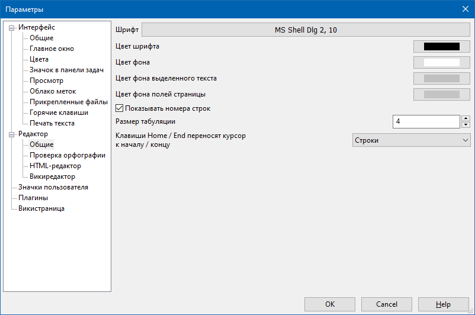

Редактор - Общие

Данный раздел содержит настройки текстового редактора, который используется для ввода заметок. Здесь можно задать начертание и размер шрифта (группа параметров Шрифт), а кроме того установить цвет фона редактора (параметр Цвет фона) и подходящий для данного фона цвет шрифта (параметр Цвет шрифта). Например, вы можете установить инверсную цветовую гамму, когда фон отображается черным цветом, а шрифт белым.
Здесь же задаются цвет фона выделенного текста и цвет фона полей страницы. Все эти элементы показаны на следующем рисунке.
Здесь же можно включить или отключить отображение номеров строк заметок, установив или сбросив флажок Показывать номера строк. Номера строк располагаются слева от основного поля ввода заметок.
С помощью параметра Размер табуляции можно установить ширину символа табуляции.
Текстовый редактор может реагировать на нажатие клавиш Home / End двумя способами, либо при нажатии этих клавиш курсор будет перемещаться на начало / в конец текущей строки, либо на начало / в конец текущего абзаца (с учетом переноса строк). Это поведение переключается с помощью выпадающего списка Клавиши Home / End переносят курсор к началу / концу либо Строки, либо Абзаца.